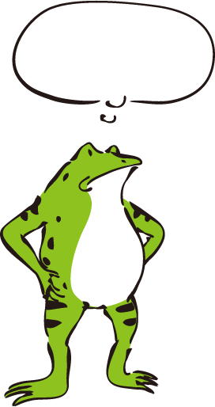
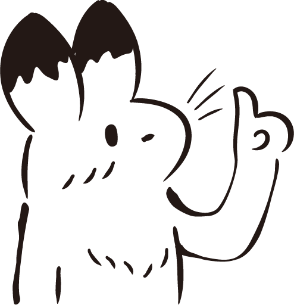

憂鬱與我們的距離
憂鬱症Q&A
憂鬱測驗
留言板
Q 憂鬱症是...？
憂鬱症是一種精神疾病，會導致人們感到悲傷、對事物失去興趣，而且持續一段不短的時間。憂鬱症和單純的憂鬱不同，憂鬱是每個人都會經歷過的情緒，多數人不會持續處於難過的狀態中，但憂鬱症會長期影響人們的感受、行為及日常工作與生活，產生各種心理及身體上的問題。

Q 憂鬱症=憂鬱情緒？
「憂鬱」指的是一般人都會出現的一種低落、感受不到愉快、沮喪的情緒，而「憂鬱症」則是一種疾病。每個人都會有心情不好的時候，有時心情不好是「有明顯壓力」-- 這些壓力可能與「人」(情人、朋友、同事)的紛擾有關，或與「事」(考試、工作、身體疾病等)的不順遂有關。如果你發現周遭人與你有類似的壓力，相較之下，你憂鬱的程度明顯較他們強烈，或憂鬱的時間明顯地拖得較久（譬如，連續三個月以上心情都沒有好轉），你就有可能得到「憂鬱症」，需找專家診斷及治療。
Q 什麼原因造成憂鬱症？
憂鬱症並非單一因素造成的，相關的肇因如下：
家族遺傳因素
創傷與壓力：經濟問題、人際關係破裂、親愛的人死亡。找新工作、畢業或新婚等
悲觀性格：低自尊、負面思考等
身體疾病：嚴重身體疾病例如心臟病、癌症、愛滋病等，會導致憂鬱症。有時憂鬱症也會讓 免疫系統能力下降，讓身體疾病更嚴重。
其他精神疾病：焦慮症、飲食障礙、思覺失調症、物質濫用也會合併憂鬱症。
Q 憂鬱症的症狀？
依照目前診斷憂鬱症的標準(DSM-IV)共有九個症狀， 至少四個症狀以上，持續超過兩週，大部分的時間皆是如此，就要小心 可能是得了憂鬱症。這些症狀包括：
憂鬱情緒：快樂不起來、煩躁、鬱悶
興趣與喜樂減少：提不起興趣
體重下降(或增加) ; 食慾下降 (或增加)
失眠(或嗜睡)：難入睡或整天想睡
精神運動性遲滯(或激動)：思考動作變緩慢
疲累失去活力：整天想躺床、體力變差
無價值感或罪惡感：覺得活著沒意思、自責難過，都是負面的想法
無法專注、無法決斷：腦筋變鈍、矛盾猶豫、無法專心
反覆想到死亡，甚至有自殺意念、企圖或計畫

Q 如何知道自己得了憂鬱症？
如果你擔心自己是不是有憂鬱症的困擾，我們提供了憂鬱症檢測量表，評估自己是否需要進一步的評估與治療，但問卷的結果分數只是一個參考，並不能作為是否有憂鬱症的依據喔！
我要測驗！
↑